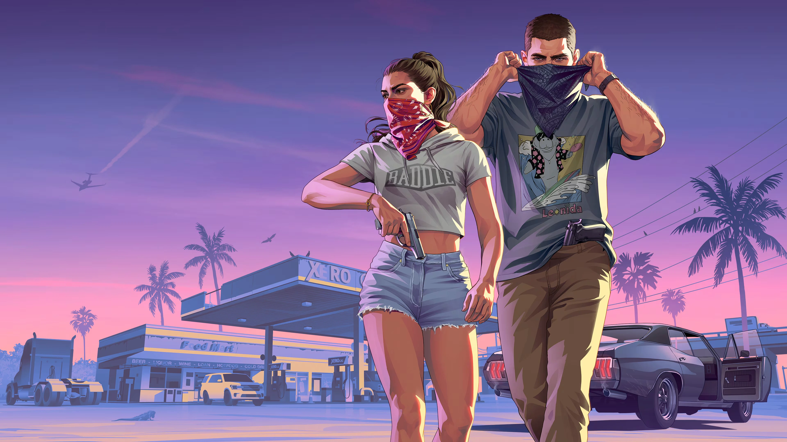
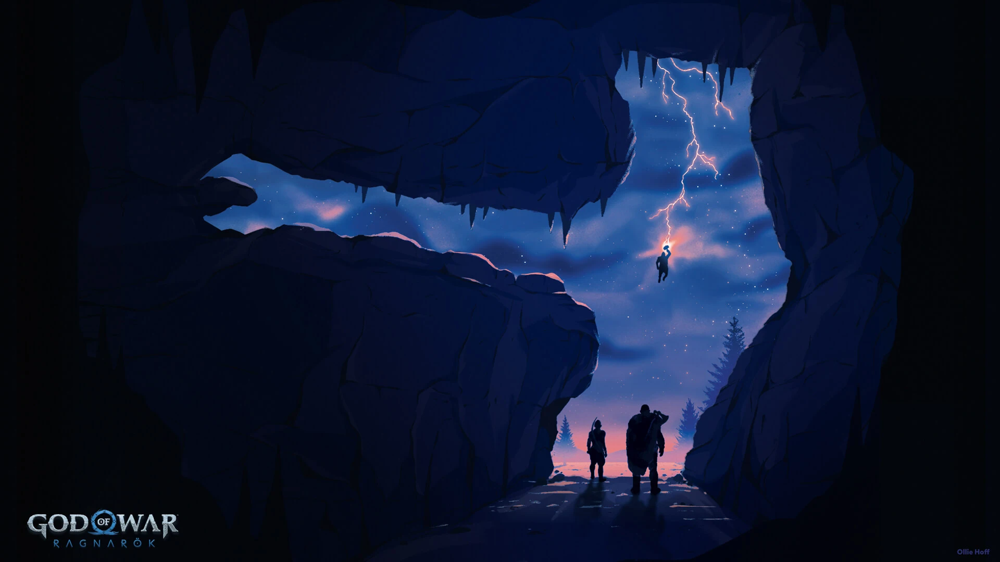
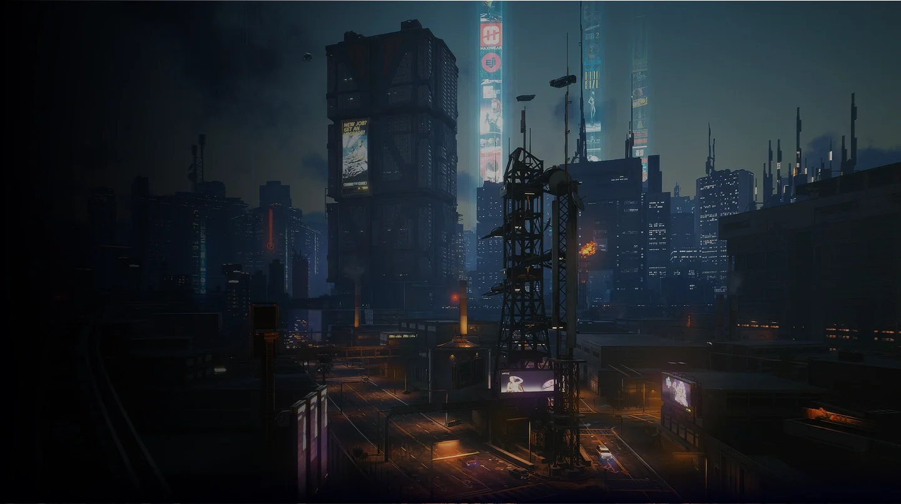
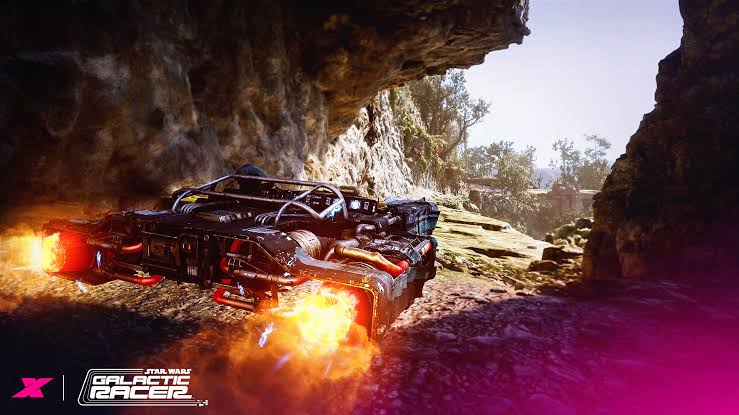
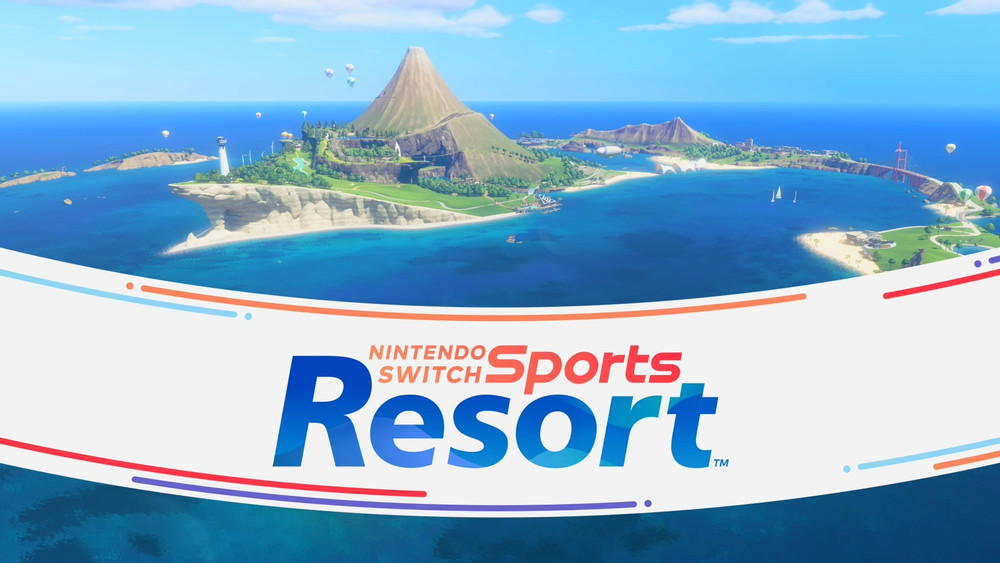

CD PROJEKT RED
CIBERPUNK 2077
Un RPG de ciencia ficción donde la identidad, el cuerpo y el alma se compran y se venden en las calles húmedas de neón.
/




P1
BIENVENIDO
Hola, Player1TENDENCIA
Forza Horizon 6TOP PUNTAJE
GTA VI - 4.9RESEÑAS
5NOVEDADES
Tu biblioteca de reseñas
Reseñas recientes y favoritos del staff


Lo más nuevo
Noticias frescas del mundo gaming
06 OCTUBRE 2026 · 5 min
Gears of War: E-Day marca el regreso a los orígenes de la saga
La esperada precuela relata los primeros días de la invasión Locust, retomando la atmósfera oscura y la acción táctica con cobertura en consolas Xbox y PC.
Leer más
06 OCTUBRE 2026 · 4 min
Star Wars: Galactic Racer revive las carreras de velocidad futurista
Inspirado en los grandes clásicos de la velocidad, el nuevo título propone competiciones frenéticas a alta velocidad a través de dunas y circuitos intergalácticos.
Leer más
22 OCTUBRE 2026 · 3 min
Switch Sports Resort y nuevas adaptaciones llegan al ecosistema Nintendo
Se confirma la llegada de nuevas versiones físicas y digitales optimizadas para la plataforma de Nintendo, ampliando el catálogo deportivo y de aventura.
Leer más